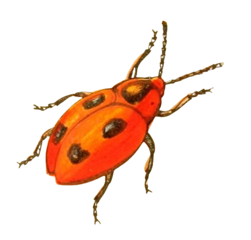
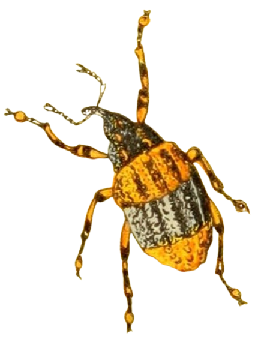

Hope you enjoy this thing I made.

You may leave a message if you wish.
I worry way too much about properly citing everything.
I started building websites for fun when I was around ten or so years old because the internet was new and weird at the time and so was I, I guess.
This site was created in November 2022 as an experiment and creative outlet. It has changed a lot over the years.
More recently I found a bunch of retro-style websites reminiscent of the 90s and wanted my creative outlet back.
This website is coded with love and mild frustration by Yours Truly using Visual Studio Code, Notepad++, and GitHub. It's best viewed on a desktop computer or laptop -- I don't think it looks great on a mobile device. I make most of the graphics using Paint Shop Pro 7 and GIMP. Anything I did not make is either in the public domain or is credited somewhere.
Much of the internet these days is a hellscape of corporate sameness, lack of privacy, AI slop, and clickbait nonsense with no substance. We can still have an internet where people can express themselves and share important information, but it seems we have to build it ourselves. This is my little attempt at my own corner of the web that I can spruce up and display to the world.